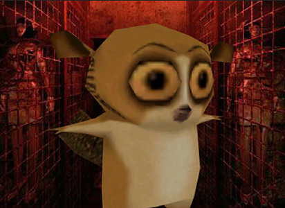
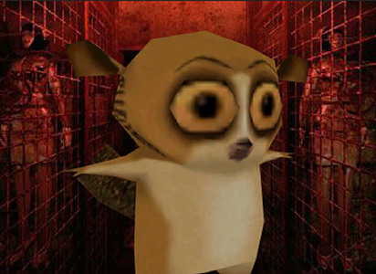

Primordialis
Primordialis salva o universo ao perceber erro no programa do Macaco Infinito.
Nesta noite de sábado, o universo foi salvo do grande apocalipse graças ao Primordialis, ou carinhosamente conhecido, Sapinho Primordial.
Diferente do que se esperava, nem mesmo o Mamaco Infinito está ausente de gerar códigos bugados ou de deixar sua desatenção atrapalhar suas linhas, mas infelizmente, as consequências para isso são graves para nosso universo. Ouça o que ele disse publicamente:
-"UUU, AH AH? UH UH UH... uh uh ah ah... 😔
Mas graças ao Primordialison que rapidamente percebeu que o Macaco Infinito esqueceu de colocar o ponto e vírgula, o código que sustenta as paredes da realidade puderam normalmente continuar a funcionar.

 
